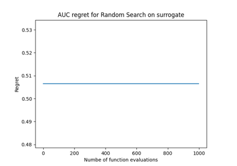

Usage in research papers¶
These examples demonstrate how OpenML-Python can be used for research purposes by re-implementing its use in recent publications.



Perrone et al. (2018)
These examples demonstrate how OpenML-Python can be used for research purposes by re-implementing its use in recent publications.